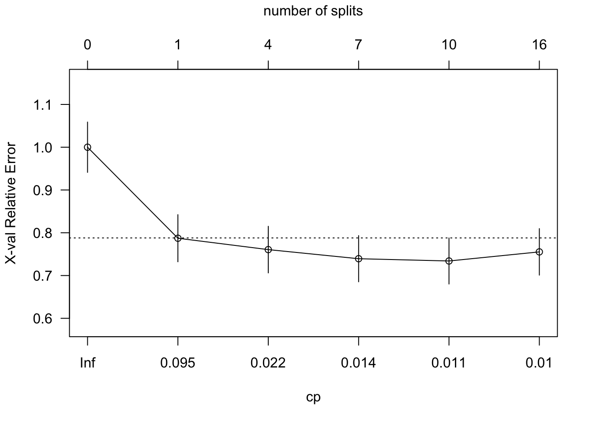
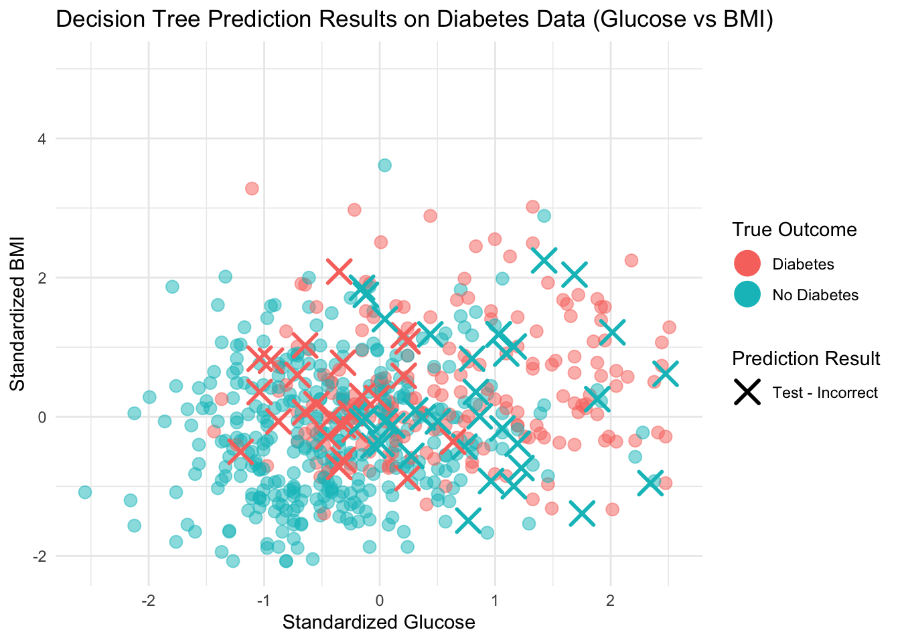

set.seed(5293)# Split the data into training and testing sets (70% train, 30% test)train_index <-createDataPartition(df$Outcome, p =0.7, list =FALSE)train_data <- df[train_index, ]test_data <- df[-train_index, ]# Train Decision Tree modeltree_model <-rpart(Outcome ~ ., data = train_data, method ="class")# Plot the treerpart.plot(tree_model, type =2, extra =104, fallen.leaves =TRUE, box.palette ='BuOr')
Code
#, extra = 3 - Display the misclassification rate
Make predictions on the test set
Code
predictions <-predict(tree_model, test_data, type ="class")# Evaluate performance with confusion matrixconfusion <-confusionMatrix(predictions, test_data$Outcome)print(confusion)
Confusion Matrix and Statistics
Reference
Prediction Diabetes No Diabetes
Diabetes 51 29
No Diabetes 29 121
Accuracy : 0.7478
95% CI : (0.6865, 0.8026)
No Information Rate : 0.6522
P-Value [Acc > NIR] : 0.001163
Kappa : 0.4442
Mcnemar's Test P-Value : 1.000000
Sensitivity : 0.6375
Specificity : 0.8067
Pos Pred Value : 0.6375
Neg Pred Value : 0.8067
Prevalence : 0.3478
Detection Rate : 0.2217
Detection Prevalence : 0.3478
Balanced Accuracy : 0.7221
'Positive' Class : Diabetes
# Prune the tree to the best cp (lowest xerror)best_cp <- tree_model$cptable[which.min(tree_model$cptable[,"xerror"]),"CP"]pruned_tree <-prune(tree_model, cp = best_cp)# Plot pruned treerpart.plot(pruned_tree, type =2, extra =104, fallen.leaves =TRUE)
Code
# Predict with pruned treepruned_preds <-predict(pruned_tree, test_data, type ="class")# Evaluate pruned treeconfusion_pruned <-confusionMatrix(pruned_preds, test_data$Outcome)print(confusion_pruned)
Confusion Matrix and Statistics
Reference
Prediction Diabetes No Diabetes
Diabetes 51 29
No Diabetes 29 121
Accuracy : 0.7478
95% CI : (0.6865, 0.8026)
No Information Rate : 0.6522
P-Value [Acc > NIR] : 0.001163
Kappa : 0.4442
Mcnemar's Test P-Value : 1.000000
Sensitivity : 0.6375
Specificity : 0.8067
Pos Pred Value : 0.6375
Neg Pred Value : 0.8067
Prevalence : 0.3478
Detection Rate : 0.2217
Detection Prevalence : 0.3478
Balanced Accuracy : 0.7221
'Positive' Class : Diabetes
Code
# Plot coress validation errorplotcp(tree_model, las =1, upper ='splits')
Code
df_sub <- df %>%select(Glucose, BMI, Outcome)# Fit simple tree on these 2 variablessimple_tree <-rpart(Outcome ~ Glucose + BMI, data = df_sub, method ="class", cp =0.01)# Create grid to predictglucose_range <-seq(min(df_sub$Glucose), max(df_sub$Glucose), length.out =100)bmi_range <-seq(min(df_sub$BMI), max(df_sub$BMI), length.out =100)grid <-expand.grid(Glucose = glucose_range, BMI = bmi_range)# Predict class on gridgrid$Outcome <-predict(simple_tree, grid, type ="class")# Plot decision boundaryggplot() +geom_point(data = grid, aes(x = Glucose, y = BMI, color = Outcome), alpha =0.3) +geom_point(data = df_sub, aes(x = Glucose, y = BMI, shape = Outcome), size =2) +labs(title ="Decision Boundary (Glucose vs BMI)", x ="Glucose", y ="BMI") +theme_minimal()

Code
# Train Random Forestrf_model <-randomForest(Outcome ~ ., data = train_data)# Predictrf_preds <-predict(rf_model, test_data)# Evaluate RFconfusion_rf <-confusionMatrix(rf_preds, test_data$Outcome)print(confusion_rf)
Confusion Matrix and Statistics
Reference
Prediction Diabetes No Diabetes
Diabetes 54 25
No Diabetes 26 125
Accuracy : 0.7783
95% CI : (0.719, 0.8302)
No Information Rate : 0.6522
P-Value [Acc > NIR] : 2.232e-05
Kappa : 0.5098
Mcnemar's Test P-Value : 1
Sensitivity : 0.6750
Specificity : 0.8333
Pos Pred Value : 0.6835
Neg Pred Value : 0.8278
Prevalence : 0.3478
Detection Rate : 0.2348
Detection Prevalence : 0.3435
Balanced Accuracy : 0.7542
'Positive' Class : Diabetes
Code
# Compare accuracycat("Pruned Decision Tree Accuracy:", confusion_pruned$overall["Accuracy"], "\n")
# Get best cpbest_cp <- tree_model_cv$cptable[which.min(tree_model_cv$cptable[,"xerror"]),"CP"] #0.01 best cp# Prune the treepruned_tree_cv <-prune(tree_model_cv, cp = best_cp)# Plot pruned treerpart.plot(pruned_tree_cv, type =2, extra =104, fallen.leaves =TRUE)
Code
# Predict on test datatree_preds <-predict(pruned_tree_cv, test_data, type ="prob")[,2]# ROC and AUCroc_tree <-roc(test_data$Outcome, tree_preds)# Train Random Forest# --------------------rf_model <-randomForest(Outcome ~ ., data = train_data)# Predict probability on test datarf_preds_prob <-predict(rf_model, test_data, type ="prob")[,2]# ROC for Random Forestroc_rf <-roc(test_data$Outcome, rf_preds_prob)# --------------------# Plot ROC curves# --------------------# Plot Tree ROC firstplot(roc_tree, col ="blue", main ="ROC Curve: Pruned Tree vs Random Forest")# Add Random Forest ROC to the same plotlines(roc_rf, col ="red")# Add Legendlegend("bottomright", legend =c(paste0("Pruned Tree AUC = ", round(auc(roc_tree), 3)),paste0("Random Forest AUC = ", round(auc(roc_rf), 3))), col =c("blue", "red"), lwd =2)
visual in 2d - for two variables
Code
# Use only two variables (Glucose and BMI)df_sub <- df %>%select(Glucose, BMI, Outcome)# Train simple tree for decision boundarysimple_tree <-rpart(Outcome ~ Glucose + BMI, data = df_sub, method ="class", cp =0.01)# Create gridglucose_range <-seq(min(df_sub$Glucose), max(df_sub$Glucose), length.out =200)bmi_range <-seq(min(df_sub$BMI), max(df_sub$BMI), length.out =200)grid <-expand.grid(Glucose = glucose_range, BMI = bmi_range)# Predict class on gridgrid$Outcome <-predict(simple_tree, grid, type ="class")# Plot decision boundary with geom_tile (better color)ggplot() +geom_tile(data = grid, aes(x = Glucose, y = BMI, fill = Outcome), alpha =0.5) +geom_point(data = df_sub, aes(x = Glucose, y = BMI, color = Outcome), size =2) +labs(title ="Decision Boundary (Glucose vs BMI)", x ="Glucose", y ="BMI") +theme_minimal()
4 Partial Dependence Plot
Code
# Train Random Forest modelset.seed(5293)rf_model <-randomForest(Outcome ~ ., data = df)# Define variable names (independent variables)vars <-colnames(df)[colnames(df) !="Outcome"]# Create PDP for each variable, combine into tidy dataframepdp_data <-map_dfr(vars, function(v) { pd <- pdp::partial(rf_model, pred.var = v, prob =TRUE, grid.resolution =20) %>%as.data.frame() %>%mutate(variable = v)# rename value and yhat columns to be consistentnames(pd)[1:2] <-c("value", "yhat")return(pd)})# Plot using ggplot2 and facet_wrapggplot(pdp_data, aes(x = value, y = yhat)) +geom_line(linewidth =1) +facet_wrap(~variable, scales ="free_x") +labs(title ="Partial Dependence Plots for All Variables",x ="Value", y ="Predicted Probability (yhat)") +theme_minimal() +theme(plot.title =element_text(size =14, face ="bold"))

4.1 Variable Importance
Code
# Convert Outcome to factordf$Outcome <-as.factor(df$Outcome)# Train Random Forest (no formula interface, better for pdp and importance)set.seed(123)rf_model <-randomForest(x = df[, -which(names(df) =="Outcome")],y = df$Outcome,importance =TRUE)rf_model$importance
# Get importanceimp <-importance(rf_model, type =2) # type=2 is Mean Decrease Gini (recommended)# Convert to dataframeimp_df <-data.frame(variable =rownames(imp),importance = imp[, 1])# Scale importance to sum to 100imp_df <- imp_df %>%mutate(importance_scaled = importance /sum(importance) *100) %>%arrange(importance_scaled)# Plotggplot(imp_df, aes(x = importance_scaled, y =reorder(variable, importance_scaled))) +geom_point(size =3) +labs(title ="Variable Importance (Scaled to Sum to 100)",x ="Variable Importance Score",y ="") +theme_minimal() +theme(plot.title =element_text(size =14, face ="bold"))
LIME
Code
# Split dataset into train and testset.seed(5293)n <-nrow(df)test_index <-sample(n, 2) # You can also use more test samples if you wanttrain_data <- df[-test_index, ]test_data <- df[test_index, ]# Train Random Forestrf_model <-randomForest(Outcome ~ ., data = train_data)# Tell lime what type of model this ismodel_type.randomForest <-function(x, ...) {return("classification")}# Prepare explainer using training data (remove Outcome column)explainer <- lime::lime(subset(train_data, select =-Outcome), rf_model)# Explain prediction for test_dataexplanation <- lime::explain(x =subset(test_data, select =-Outcome),explainer = explainer, labels ='No Diabetes', n_features =7,n_permutations =1000, feature_select ='lasso_path')# View explanationprint(explanation)
# A tibble: 14 × 13
model_type case label label_prob model_r2 model_intercept model_prediction
<chr> <chr> <chr> <dbl> <dbl> <dbl> <dbl>
1 classificat… 339 No D… 0.156 0.433 0.746 0.151
2 classificat… 339 No D… 0.156 0.433 0.746 0.151
3 classificat… 339 No D… 0.156 0.433 0.746 0.151
4 classificat… 339 No D… 0.156 0.433 0.746 0.151
5 classificat… 339 No D… 0.156 0.433 0.746 0.151
6 classificat… 339 No D… 0.156 0.433 0.746 0.151
7 classificat… 339 No D… 0.156 0.433 0.746 0.151
8 classificat… 11 No D… 0.856 0.194 0.621 0.573
9 classificat… 11 No D… 0.856 0.194 0.621 0.573
10 classificat… 11 No D… 0.856 0.194 0.621 0.573
11 classificat… 11 No D… 0.856 0.194 0.621 0.573
12 classificat… 11 No D… 0.856 0.194 0.621 0.573
13 classificat… 11 No D… 0.856 0.194 0.621 0.573
14 classificat… 11 No D… 0.856 0.194 0.621 0.573
# ℹ 6 more variables: feature <chr>, feature_value <dbl>, feature_weight <dbl>,
# feature_desc <chr>, data <list>, prediction <list>